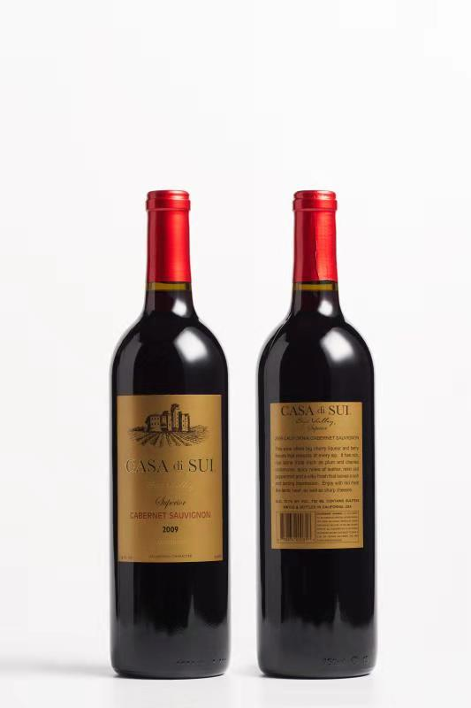

品名：是谷庭特级珍藏赤霞珠红葡萄酒（CASA DI SUI Superior Cabernet Sauvignon 2009)


是谷庭特级珍藏赤霞珠红葡萄酒
（CASA DI SUI Superior Cabernet Sauvignon 2009)介绍
产地：美国加州，中央谷
年份：2009年
成分：100%赤霞珠葡萄
颜色：宝石红
香味：散发成熟的李子和黑樱桃的果香
口感：丝丝松香和薄荷的清新气息丝般柔滑酒体，给人留下深刻悠长的余韵
酒精度：13.1%
净含量：750毫升
酿酒师评鉴：
特级珍藏的“是谷庭”赤霞珠红葡萄酒，严选加州高素质的赤霞珠酿制。香浓的草莓果酱，新鲜黑醋栗和淡淡的焦糖香气迎面而来。惹人喜爱梅子和李子香味伴随香草和雪松的复杂气息从舌尖溜流到喉底。柔和顺滑的酒体加上浓香复杂的味道，令这趟品酒之旅别具一格。这种感觉不会一瞬即逝，而是十年如一日地温暖难忘。该酒适宜和小羊肉或牛肉一齐享用。